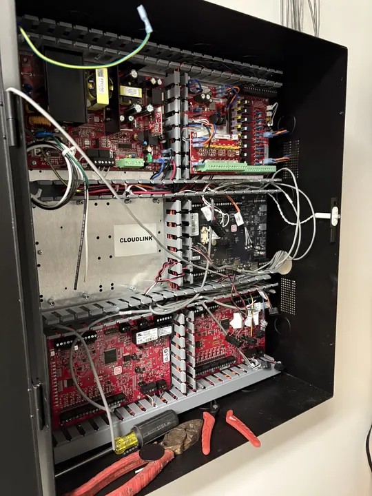
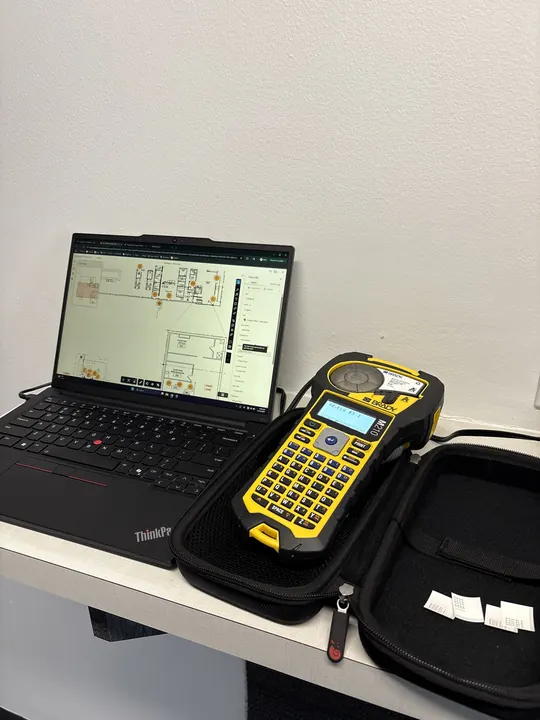
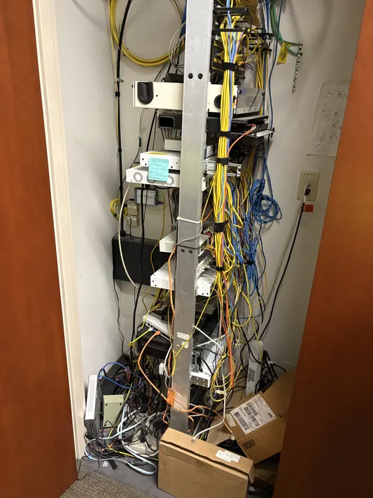

01 / CCTV
Surveillance and video
IP camera systems, VMS design and health, coverage mapping, and the retrofit of aging analog and half-migrated plants. Fixed, multisensor, and PTZ.
Dodd Tech Services is a commercial low voltage integrator working in surveillance, access control, structured cabling, networking, and paging across Georgia and the drivable Southeast. One accountable owner on site, and an as-built record of your plant that stays yours.
The same hands scope it, install it, and service it. No sales rep handing you to subcontractors you have never met.
IP camera systems, VMS design and health, coverage mapping, and the retrofit of aging analog and half-migrated plants. Fixed, multisensor, and PTZ.
Door controllers, readers, electrified hardware, and credential systems, integrated cleanly with the security stack a site already runs. Panel replacements and conversions in occupied buildings.
Copper station cabling, patch panels, pathways, and telecom room build-outs, labeled to a written naming standard with an as-built record you keep.
Switching, VLAN segmentation, PoE budgeting, and managed wireless. UniFi is our standard platform for commercial sites, right-sized and integrated with existing enterprise gear.
Overhead paging, zoned announcement, and background audio for retail, warehouse, and mixed-use environments.
FOA-certified fiber termination and testing for building backbones and inter-building runs, with results delivered in the documentation package.
Most facilities inherit a camera plant nobody documented and nobody owns. We fix that on the way in.
You deal with the person who scopes the work and stands behind it. One point of accountability from walk-through to punch list.
Cameras, doors, cabling, and network are looked at together, not one ticket at a time by a rotating crew.
We start with a documented assessment of what you actually have. Recommendations follow from the findings, not from a guess in the parking lot.
As-built maps, a per-camera census, and a full device record are handed over to you, along with the credentials to your own equipment.
Completed and active engagements, 2025 to 2026. Scope ranges from single-door service calls to multi-site camera and network deployments across several states.
| Engagement | Systems | |
|---|---|---|
| 01 |
National retail property portfolios, multiple states
Security assessments, camera-system modernization, switch and cabling work, and network health engagements across enclosed retail properties in Georgia, South Carolina, Arizona, and Florida.
|
CCTV · Network · Cabling |
| 02 |
Industrial facilities, Phoenix AZ and Ellenwood GA
Multi-camera deployments (multisensor and fixed), UPS backup power, and network coordination with on-site facilities teams and the cabling contractor of record.
|
CCTV · Power · Network |
| 03 |
Seven-door access control conversion, Scottsdale AZ
Genetec access control conversion for a professional office in an occupied building, delivered as the field partner in a national integrator chain.
|
Access · Genetec |
| 04 |
Office access control and intercom, Atlanta GA and Columbia MD
Door-access replacements and intercom installs for corporate offices: survey, replacement, cabling, and commissioning.
|
Access · Verkada |
References from completed engagements are available on direct request.
From recent commercial installations and assessments.



The same repeatable sequence whether it is one building or a portfolio of properties.
Walk the site, scan the network, and inventory every device against what is really deployed.
Deliver an as-built map, coverage analysis, and a reconciliation of what works, what is blind, and what is at risk.
Fix, replace, or extend to close the gaps, scoped from the findings and sequenced by what matters first.
Ongoing health checks and documentation upkeep so the plant never drifts back into a mystery.
Garages, entrances, floors, and perimeters, where a blind spot is a claim waiting to happen.
Shopping centers and retail portfolios. Trusted on national mall properties for camera assessment and remediation.
Hotels and resorts. Garage, common-area, and perimeter coverage tied to premises-liability exposure.
Private and independent schools. Duty-of-care coverage, vape detection, and honest cloud-versus-local guidance.
Warehouse and logistics. Multi-site camera, access, and network programs for safety and operations.
Mixed-use and commercial office. Property-manager-led security and infrastructure across a portfolio.
General contractors and developers. The low voltage partner you can put in front of an owner without a second thought.
Platform experience across Hanwha Vision, Genetec, Verkada, Ubiquiti UniFi, Cisco, and APC. Insurance certificates available on request.
Dodd Tech Services is the trade name of Dodd Services LLC, a Georgia company based in Atlanta and owned by Thomas Dodd. The firm exists because most commercial properties inherit their security infrastructure: a camera plant installed by a vendor who has since disappeared, an access control panel nobody has the password to, a telecom closet where cables go in and no drawing says where they come out.
We walk the site, count what is really there, write it down, and hand the record to the owner. Thomas scopes every job, works every job, and answers the phone afterward. When a project needs more hands, they work on site under his direction. The firm is platform-agnostic on purpose: UniFi is our standard network platform, we work with the major camera and access control lines, and when the right answer is to keep what you have, the assessment says so.
Questions about a property, a system you inherited, or how we work? Email is the fastest way to reach us. The phone is answered when we are not on a ladder, and voicemail is returned.
Email hello@doddtechservices.com